Academia Portugal Digital

Academia Portugal Digital is a national initiative designed to democratise digital learning across Portugal. As part of a government-led digital transformation programme, the platform aims to equip citizens of all ages and backgrounds with essential digital skills — from basic computer literacy to advanced technology competencies.
The project involved redesigning the entire user experience to create an accessible, inclusive, and engaging learning environment that serves thousands of Portuguese citizens seeking to improve their digital competencies.
Design an inclusive platform that accommodates users with varying levels of digital literacy, ages, and abilities while meeting WCAG accessibility standards.
Create pathways that adapt to individual learning goals, skill levels, and interests to keep learners engaged and motivated throughout their journey.
Support Portugal's digital agenda by providing tools and resources that empower citizens to participate fully in the digital economy and society.
Conducted extensive user research with diverse demographic groups to understand barriers to digital learning, including interviews with seniors, rural community members, and people with accessibility needs.
Reorganised content structure to create clear learning paths, simplified navigation, and intuitive course discovery mechanisms that work for users with limited digital experience.
Created low and high-fidelity wireframes, tested with representative users, and iterated based on feedback to ensure the design met real user needs.
Developed a comprehensive design system with accessible colour palettes, clear typography, and reusable components that ensure consistency across the platform.
Conducted usability testing sessions with diverse user groups, including accessibility audits, and refined the design based on findings to optimise the user experience.
Early wireframes focused on simplifying the user journey and creating clear visual hierarchy for users with varying levels of digital literacy.
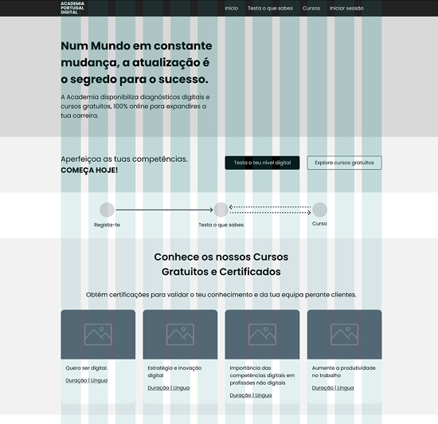
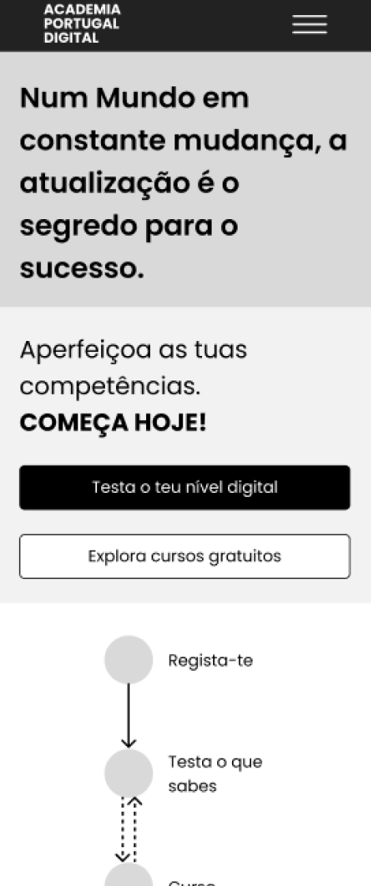
A comprehensive design system was created to ensure consistency, accessibility, and scalability across the entire platform.
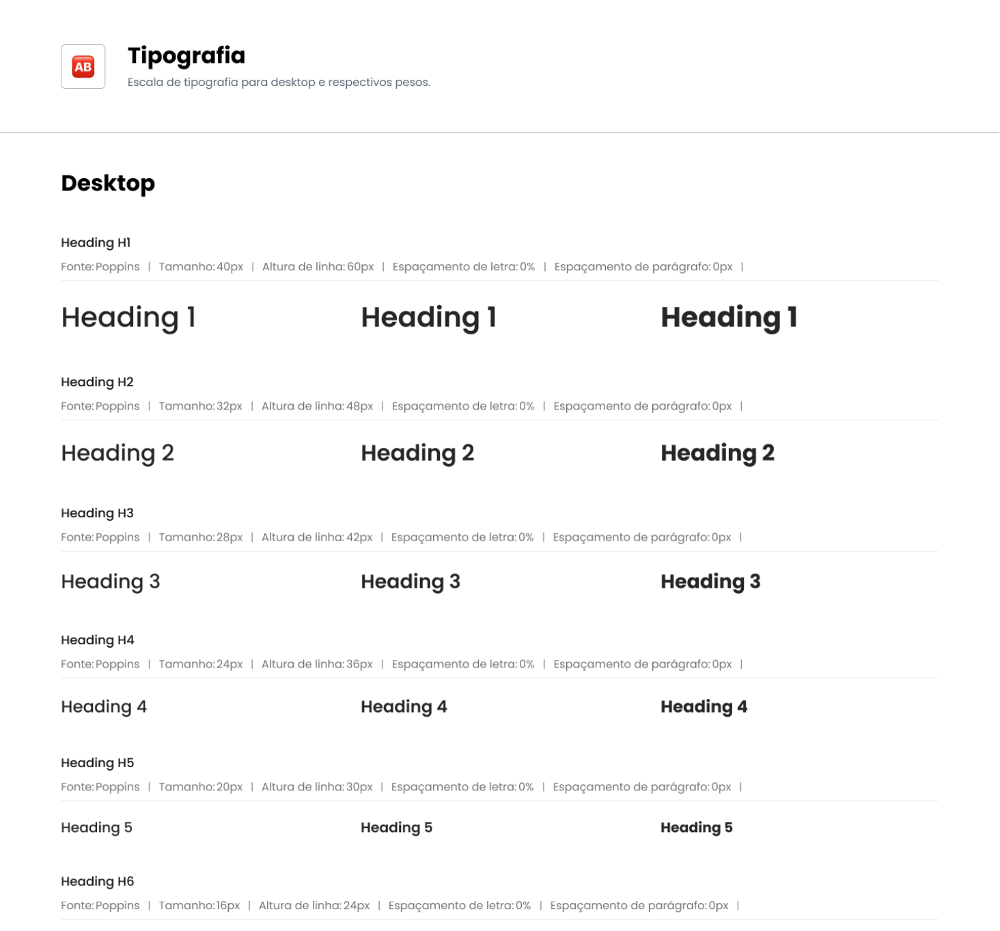
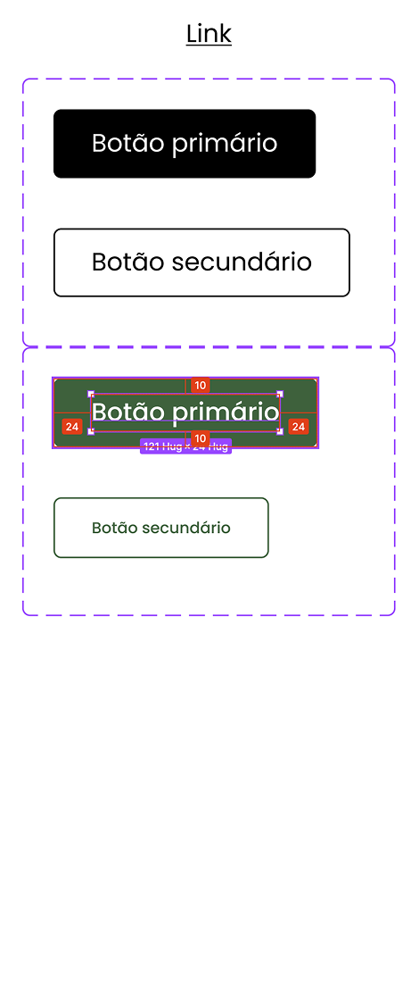
A side-by-side comparison showing the transformation from the old interface to the new, accessible, and user-friendly design.
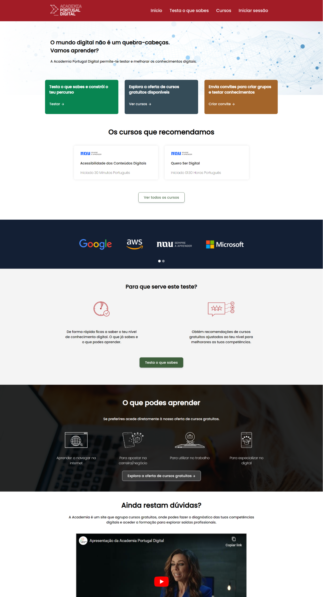
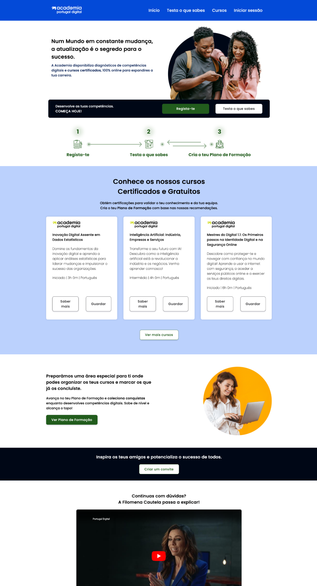
The final high-fidelity designs showcase a clean, modern interface that prioritises usability and accessibility for all users.
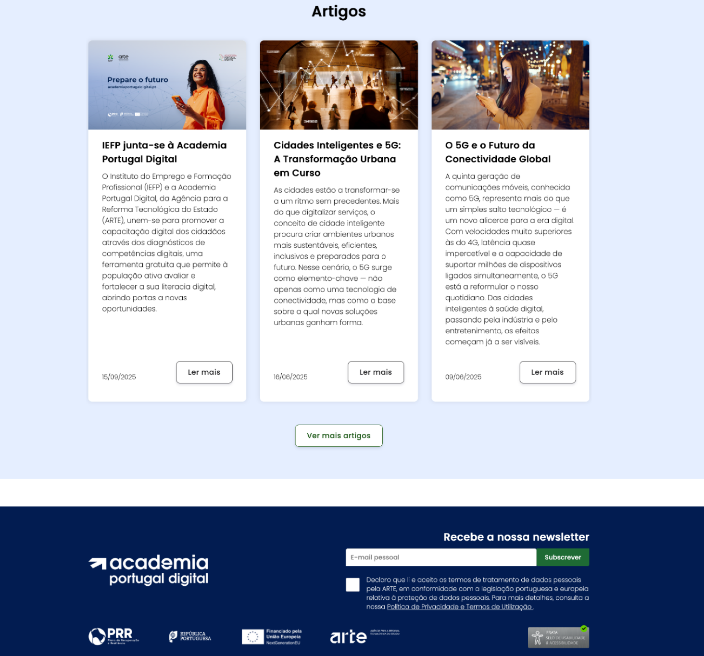
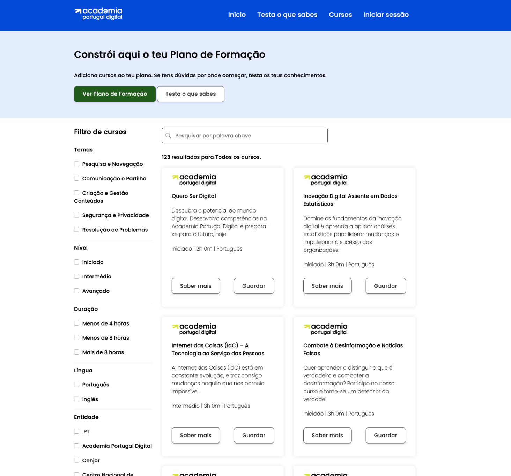
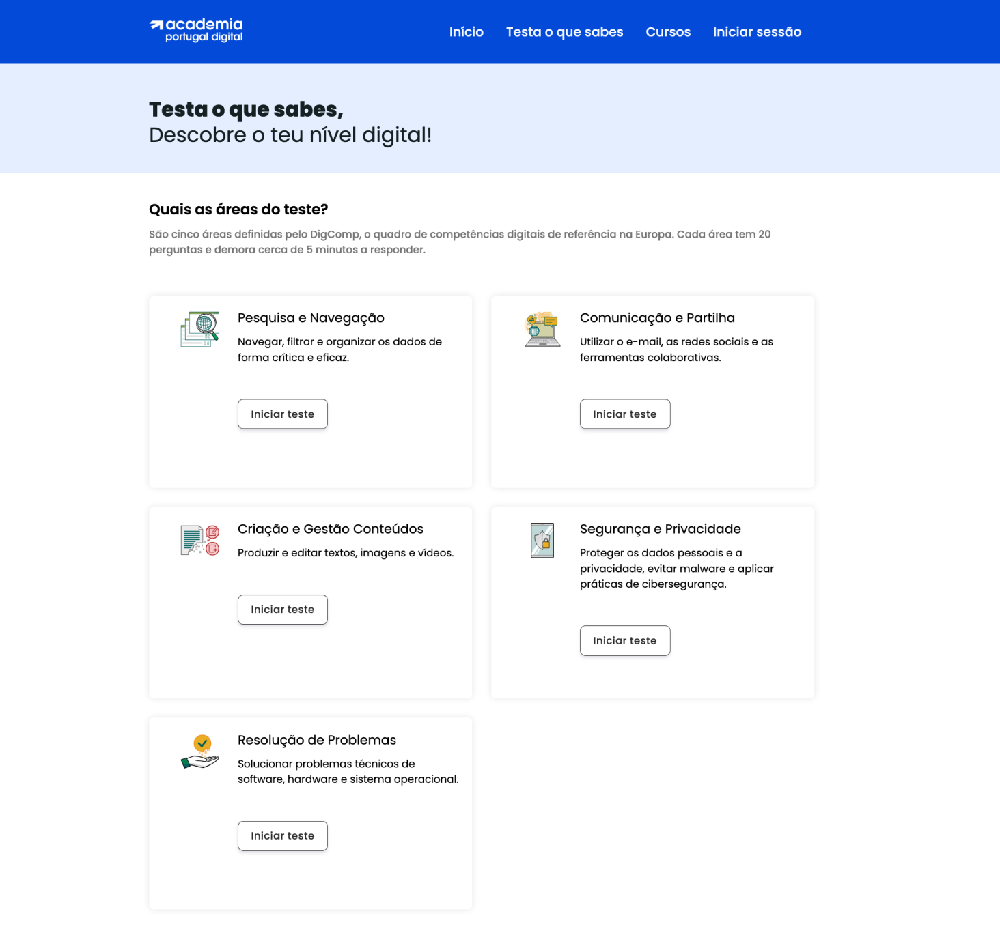
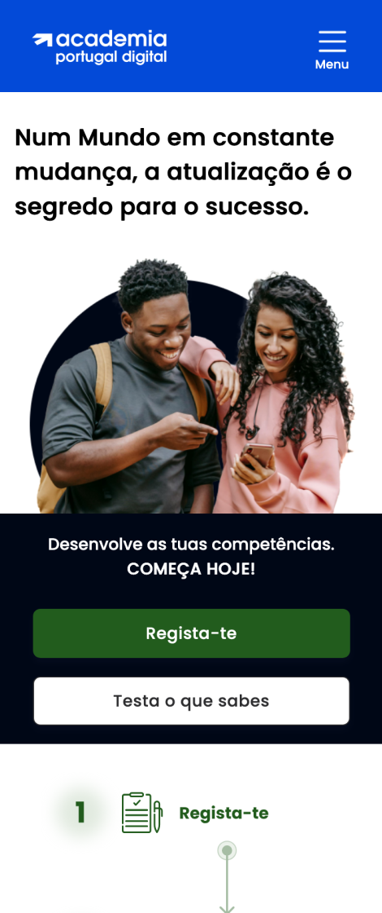
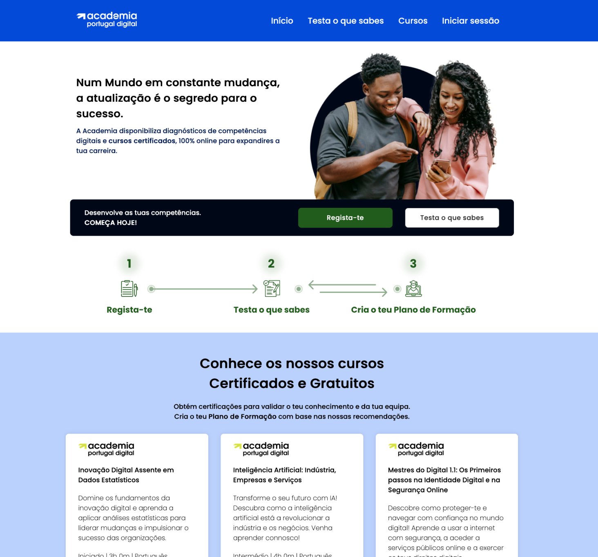
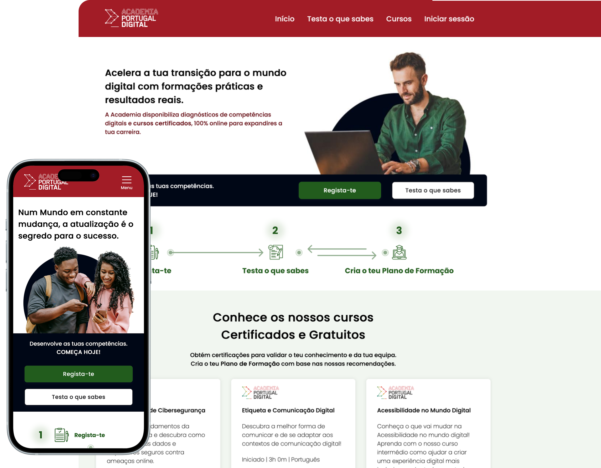
The redesigned platform achieved WCAG 2.1 AA compliance, making digital education accessible to users with visual, motor, and cognitive disabilities.
User testing showed a 45% increase in course completion rates and significantly higher satisfaction scores among users aged 55+.
The platform now serves over 50,000 active learners, contributing significantly to Portugal's digital transformation goals and reducing the digital divide.